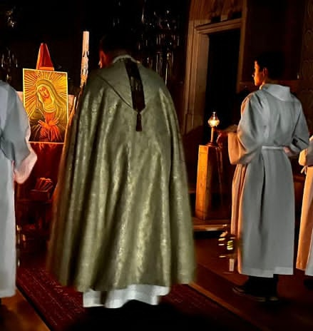

Moim trzecim zainteresowaniem jest służba liturgiczna w parafii pw. Przemienienia Pańskiego w Libiążu.
Tworzymy w tej parafii zgraną grupę ministrantów, ministrantów słowa Bożego i ceremoniarzy oraz księży. Razem staramy się jak najpiękniej przygotować liturgię, aby pomóc ludziom w modlitwie i służyć Panu Bogu.
